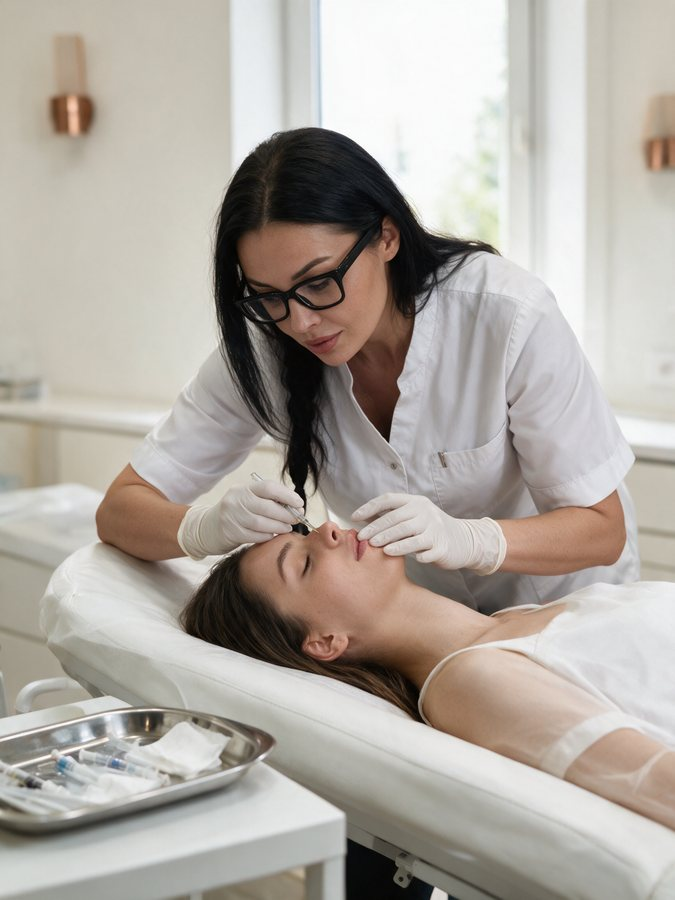

медсестра
Хотите перейти в косметологию
Начать с основ ухода за кожей и аппаратных методик, а затем перейти к пилингам и инъекционным методикам.
Курс для медсестёр, фельдшеров и акушерок, которые хотят перейти в косметологию. Уход за кожей лица, массаж, аппаратные методики и поверхностные пилинги, затем мезотерапия, биоревитализация, плазмолифтинг, сердечно-лёгочная реанимация и взятие крови из вены.
Кому подходит
Начать с основ ухода за кожей и аппаратных методик, а затем перейти к пилингам и инъекционным методикам.
В программе меньше организационных дисциплин, чем в очном курсе на 504 часа, — основное время уходит на косметологию.
Специальности «Сестринское дело», «Лечебное дело» или «Акушерское дело». Нет такого диплома — подберём другой курс.
Результат
В курсе собраны базовые дисциплины эстетической косметологии, аппаратные и инъекционные методики. Цель программы — дать комплекс современных методических и практических подходов к задачам косметологии.
Программа
По учебному плану 2025–2026. Итоговая аттестация — зачёт. В таблице плана часы указаны для модулей 1–6, в сумме это 200 ак. ч. Сколько часов занимает дистанционный модуль 7 и как распределены остальные 88 ак. ч, в плане не расписано, — подробный график пришлёт менеджер вместе с программой.
Номера справа — номера тем в учебном плане. Часы по отдельным темам в плане не указаны.
Прислать полную программуКакую версию выбрать
У Академии три программы «Сестринское дело в косметологии». Допуск у всех одинаковый — среднее медицинское образование, а содержание и формат отличаются.
Упор на косметологию: уход за кожей, массаж лица, аппаратные методики, поверхностные пилинги и инъекционные методики. Плюс СЛР, взятие крови и короткий дистанционный блок по праву и анатомии кожи.
Профессиональная переподготовка с большим блоком организации здравоохранения и сестринской помощи, неотложными состояниями и процедурами: плазмолифтинг, мезотерапия, биоревитализация, пилинги, лазерная эпиляция. Подробнее о курсе
Теоретическая программа о сестринской помощи в косметологии, инфекционной безопасности и уходе за пациентами. Учитесь в своём темпе, практики на моделях нет. Подробнее о курсе
В учебном плане этой программы не указаны даты, длительность в днях, состав практических занятий и работа на моделях. Менеджер расскажет, как устроены очные занятия в ближайшей группе и какой документ выдаётся по итогам.
Условия
Возможность применять методики после курса зависит от вашего образования, допуска и требований законодательства.
Выдаётся после прохождения обучения и итоговой аттестации — зачёта. Вид документа указывается в договоре, его вы получаете до оплаты.
Преподаватель

Преподаватель курсов эстетической косметологии и коррекции фигуры. МОКМ, «Сестринское дело». Более 20 сертификатов по направлениям косметологии.
Стоимость
Условия оплаты, переноса и расторжения — в договоре, его вы получаете до оплаты.
Оставьте заявку — менеджер сообщит цену для ближайшей группы и пришлёт договор.
Порядок и сроки оплаты указываются в договоре. Про рассрочку спросите у менеджера.
Очная программа в Люберцах с блоком организации здравоохранения, неотложными состояниями и практикой на моделях.
75 000 ₽ · подробнее о курсе
Вопросы
Консультирует менеджер Академии: +7 916 175-10-32.
Стоимость этой программы сообщает менеджер. Оставьте заявку или позвоните по номеру +7 916 175-10-32 — назовём цену и пришлём договор с условиями оплаты.
В курсе на 288 часов больше эстетической косметологии: массаж лица, маски, аппаратные методики, механическая чистка, окрашивание бровей и ресниц, воск, поверхностные пилинги. Блока организации здравоохранения, как в программе на 504 часа, здесь нет. Инъекционные методики, СЛР и взятие крови из вены есть в обеих программах.
Очно в учебном центре в Люберцах, с использованием дистанционных технологий. В учебном плане отдельно выделен дистанционный блок: нормативно-правовое регулирование в косметологии, анатомия и физиология кожи. Расписание очных занятий сообщит менеджер.
В учебном плане часы указаны для модулей 1–6 — в сумме 200 академических часов. Объём дистанционного модуля 7 и распределение остальных 88 часов в таблице не расписаны. Подробный график менеджер пришлёт вместе с программой.
Нет. Программа для специалистов со средним медицинским образованием по специальности «Сестринское дело», «Лечебное дело» или «Акушерское дело». Диплом мы проверяем до оплаты, а если он не подходит — подберём другой курс.
Документ об обучении после итоговой аттестации — зачёта. Точный вид документа указывается в договоре, который вы получаете до оплаты.
Что изучить дальше
ОчноОчная переподготовка с практикой на моделях.
Переподготовка без практики, в своём темпе.

ОчноПереподготовка для врачей: мезотерапия, биоревитализация, контурная пластика.
 Очно
ОчноЧистки, пилинги, аппаратные уходы, массаж лица.

Запись на курс
Оставьте контакты — менеджер сообщит дату ближайшей группы и стоимость, пришлёт программу и договор, проверит ваш диплом.